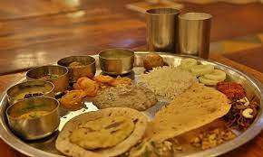
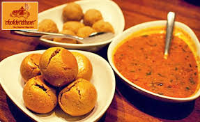
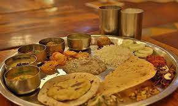
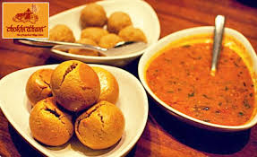

CHOWKIDHANI
Chokhi Dhani Group, a name synonymous to Rajasthani village themed hospitality since 1990, is now accredited with the 5 Star DELUXE category by the Ministry of Tourism, Government of India
It showcase the rajasthani culture and serves the best Rajasthani Thali. As Chokhi Dhani Panchkula is located in the Amravati Enclave on the Chandigarh-Shimla highway. The entry fee was Rs 550 per person. Evening timing are 5:30 pm to 11:00 pm. One must visit Chokhi Dhani Panchkula to enjoy Rajasthani food and culture.
 



The best-known Rajasthani food is the combination of dal, bati, and churma but for the adventurous traveler, willing to experiment, there is a lot of variety available.
Visit the website for more Information:
Choki Dhani
HARYANA HOME PAGE